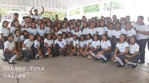
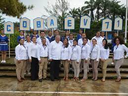

BIENVENIDOS A NUESTRO COLEGIO "DE BACHILLERES COBAEV 60"
Tiene como objetivo general el impartir e impulsar la educación correspondiente al bachillerato en sus modalidades propedéutico y terminal dentro de nuestra entidad federativa..
MISION, PROYECTOS Y REQUISITOS
son campañas por ejemplo
La mision de este colegio
es preparar a los alumnos
con una buena educación y evaluar los logros.
1.Haber culminado la educacion primaria.
2.Tener entre 14 y 15 años
3.Querer formar parte de la familia cobaev.
COMUNIDADES DONDE SE ENCUENTRA LA INSTITUCION

Los naranjos Ver.

Cd. Aleman
